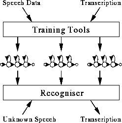

HTK is a toolkit for building Hidden Markov Models (HMMs). HMMs can be used to model any time series and the core of HTK is similarly general-purpose. However, HTK is primarily designed for building HMM-based speech processing tools, in particular recognisers. Thus, much of the infrastructure support in HTK is dedicated to this task. As shown in the picture alongside, there are two major processing stages involved. Firstly, the HTK training tools are used to estimate the parameters of a set of HMMs using training utterances and their associated transcriptions. Secondly, unknown utterances are transcribed using the HTK recognition tools.

The main body of this book is mostly concerned with the mechanics of these two processes. However, before launching into detail it is necessary to understand some of the basic principles of HMMs. It is also helpful to have an overview of the toolkit and to have some appreciation of how training and recognition in HTK is organised.
This first part of the book attempts to provide this information. In this chapter, the basic ideas of HMMs and their use in speech recognition are introduced. The following chapter then presents a brief overview of HTK and, for users of older versions, it highlights the main differences in version 2.0. Finally in this tutorial part of the book, chapter 3 describes how a HMM-based speech recogniser can be built using HTK. It does this by describing the construction of a simple small vocabulary continuous speech recogniser.
The second part of the book then revisits the topics skimmed over here and discusses each in detail. This can be read in conjunction with the third and final part of the book which provides a reference manual for HTK. This includes a description of each tool, summaries of the various parameters used to configure HTK and a list of the error messages that it generates when things go wrong.
Finally, note that this book is concerned only with HTK as a tool-kit. It does not provide information for using the HTK libraries as a programming environment.